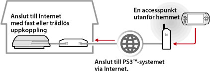

Nätverk > Använda fjärruppspelning (via Internet)
Använda fjärruppspelning (via Internet)
För att använda denna funktion kan det hända att du måste uppdatera systemprogramvaran i PS3™-systemet och PSP™-systemet.
Med hjälp av ditt PSP™-system och en trådlös accesspunkt (sådan som man finner via en kommersiell, trådlös hotspottjänst (trådlöst lokalt nätverk)), kan du ansluta till det PS3™-system som finns i ditt hem via Internet. För att kunna använda fjärruppspelning när du inte befinner dig hemma, måste PS3™-systemet vara inställt på viloläget för fjärruppspelningsanslutning.

Tips!
Metoden och kostnaden för en kommersiell, trådlös hotspottjänst (trådlöst lokalt nätverk) varierar mellan olika leverantörer. Kontakta leverantören för mer information.
Förbered (1) (PS3™- och PSP™-systemen)
När du använder fjärruppspelning för första gången måste du registrera (koppla ihop) PSP™-systemet med PS3™-systemet. Registrera systemet under  (Inställningar) >
(Inställningar) >  (Inställningar för fjärrspel) > [Registrera enhet].
(Inställningar för fjärrspel) > [Registrera enhet].
Förbered (2) (PS3™-system)
Ställ in PS3™-systemet för att ange standbyläge. Du måste sätta [Fjärrstarta] på [På] så att du kan sätta på PS3™-systemet från PSP™-systemet.
1. |
Utför följande steg på PS3™-systemet:
|
|---|---|
2. |
Stäng av PS3™-systemet. |
 (Användare).
(Användare). (Stäng av systemet) för att stänga av systemet och sätta det i standbyläge. Kontrollera att strömindikatorn lyser rött.
(Stäng av systemet) för att stänga av systemet och sätta det i standbyläge. Kontrollera att strömindikatorn lyser rött.Tips!
För information om inställningarna i steg 1, se (Inställningar) > (Inställningar för fjärrspel) > [Fjärrstart] i denna guide.
Förbered (3) (PSP™-system)
Skapa en nätverksanslutning för att ansluta PSP™-systemet till en accesspunkt. För att kunna använda fjärruppspelning via Internet kan du använda en accesspunkt som t ex en kommersiell, trådlös hotspottjänst (trådlöst lokalt nätverk). Mer information finns i PSP™-systemets användarhandbok.
Använda fjärruppspelning
1. |
Välj > |
|---|---|
2. |
Välj [Connect via Internet]. |
3. |
Välj den anslutning för åtkomstpunkten som ska användas för fjärrspel från listan över anslutningar. |
4. |
Mata in inloggnings-ID och lösenord för PlayStation®Network-kontot som används i PS3™-systemet.
|
 (Fjärrspel) under
(Fjärrspel) under  (Nätverk) på PSP™-systemet.
(Nätverk) på PSP™-systemet.
Avsluta fjärruppspelning
Tryck på PS-knappen (HOME-knappen) på PSP™-systemet, och välj sedan [Quit Remote Play] > [Quit and Turn Off the PS3™ System].
Tips!
Välj [Quit Without Turning Off the PS3™ System] om du använder ditt PS3™-system för att kopiera filer, eller för att ladda ner filer i bakgrunden och andra uppgifter där det krävs att systemet förblir påslaget.
Använda fjärruppspelning via Internet
Du kan eventuellt inte använda fjärruppspelning via Internet, beroende på vilken nätverksenhet som används. Kontrollera följande information om detta händer.
- Använd [Test av Internet-anslutning] för
 (Nätverksinställningar) under (Inställningar) för att kontrollera att PSP™-systemet kan ansluta till Internet och PlayStation®Network.
(Nätverksinställningar) under (Inställningar) för att kontrollera att PSP™-systemet kan ansluta till Internet och PlayStation®Network. - Om den router som används har stöd för UPnP ska routerns UPnP-funktion aktiveras.
- Om den router som används inte har stöd för UPnP, måste du ställa in routerns port så att den vidarebefordrar kommunikationen, så att den når PS3™-systemet via Internet. Det portnummer som används av fjärruppspelningen är TCP:9293. Mer information om hur detta alternativ ställs in finns i de anvisningarna som levererades med din router.
- Vidarebefordrande port är en funktion som skickar signaler som ankommer till en specifik port (entré), vidare till en annan specifik port (utgång). Detta kallas också "portmappning" eller "adresskonvertering".
- Om PS3™-systemet är anslutet till Internet via två eller fler routrar, kan det hända att kommunikationen inte fungerar.
Tips!
- En router är en enhet som gör det möjligt för flera enheter att dela på en enda Internetlinje.
- Kommunikationen kan vara begränsad beroende på de säkerhetsfunktioner som routern och Internetleverantören erbjuder. Läs de anvisningar som levererades tillsammans med den aktuella nätverksenheten, samt det material som kommer från Internetleverantören.